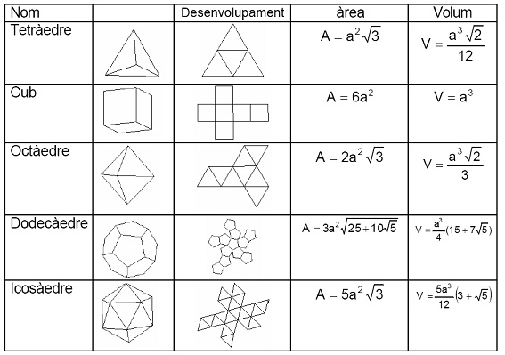
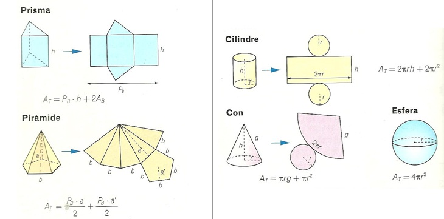
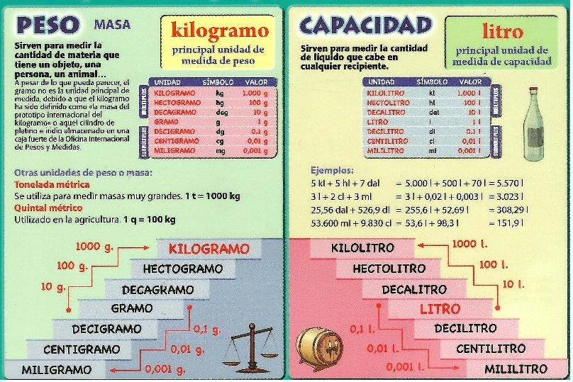
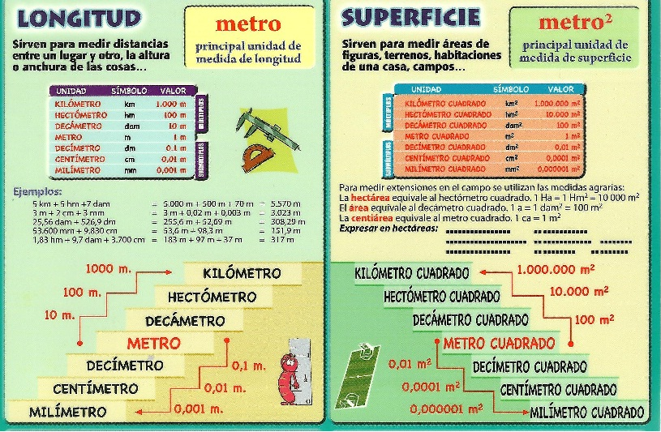

RECORDA
Un poliedre és regular quan totes les cares són polígons regulars iguals i, a més, en cada vèrtex concorren el mateix nombre de cares.

Fòrmula d’Euler (poliedres
convexos)

Altres poliedres. Font: Matemàtiques 2 ESO.
Editorial Grup Promotor Santillana
Obtenció del desenvolupament pla de poliedres 
Altres poliedres. Font: Matemàtiques 2 ESO.
Editorial Grup Promotor Santillana
Obtenció del desenvolupament pla de cossos de revolució 
Altres poliedres. Font: Matemàtiques 2 ESO.
Editorial Grup Promotor Santillana
Al segle XVIII hi havia moltíssimes unitats de mesura. Per exemple la
longitud es podia mesurar en peus, polzades, milles, pams, colzes, mans,
cadenes...Per això l’any 1790 l’Assemblea Nacional Francesa va encarregar a
l’Acadèmia de

Unitats del Sistema Internacional. Font: Adhana
Ediciones

Unitats del Sistema Internacional. Font: Adhana
Ediciones
Unitats del Sistema Internacional. Font: Adhana
Ediciones
|